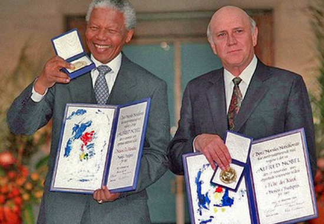
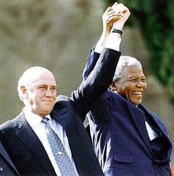

Frederik Willem de KlerkÈ stato l'ultimo presidente bianco del Sudafrica dell'apartheid dal settembre 1989 al maggio 1994 ed inoltre è stato capo dell'NP (National Party, divenuto poi New National Party) dal febbraio 1989 al settembre 1997. De Klerk è meglio conosciuto per aver consentito la fine dell'apartheid, la politica di segregazione sudafricana, e per aver sostenuto la trasformazione del suo paese in una democrazia, avviando negoziati che si conclusero con la concessione del diritto di voto e di altri diritti fondamentali per tutti i cittadini del suo paese, inclusa la maggioranza nera. Durante la sua presidenza giocò un ruolo fondamentale nell'iniziare e guidare il processo di trasformazione che ha aiutato a risolvere centinaia di anni di conflitti fra le varie comunità razziali del paese ed a gettare le fondamenta per una pace definitiva fra queste comunità. Per questi motivi gli fu assegnato, nel 1993, il Premio Nobel per la pace insieme all'altro grande protagonista dei negoziati, vale a dire Nelson Mandela. Dopo questi avvenimenti de Klerk è stato vicepresidente del Sudafrica, durante la presidenza di Nelson Mandela, dal 1994 al 1996, ritirandosi dalla politica l'anno seguente.  |